The air at the compound was thin, cold, and smelled of pine and diesel fuel. It was a stark contrast to the climate-controlled, sanitized penthouses of Wall Street where his money lived.
Nicolás Reyes sat at a simple, scarred wooden table on the veranda of a heavily fortified ranch house. He wasn't wearing an Italian suit. He wore a dark canvas jacket, a simple black t-shirt, and a silver crucifix resting against his collarbone. Around the perimeter of the ranch, sixty men in full tactical gear and level-IV body armor stood watch, holding customized assault rifles. They were his ghosts. His private army.
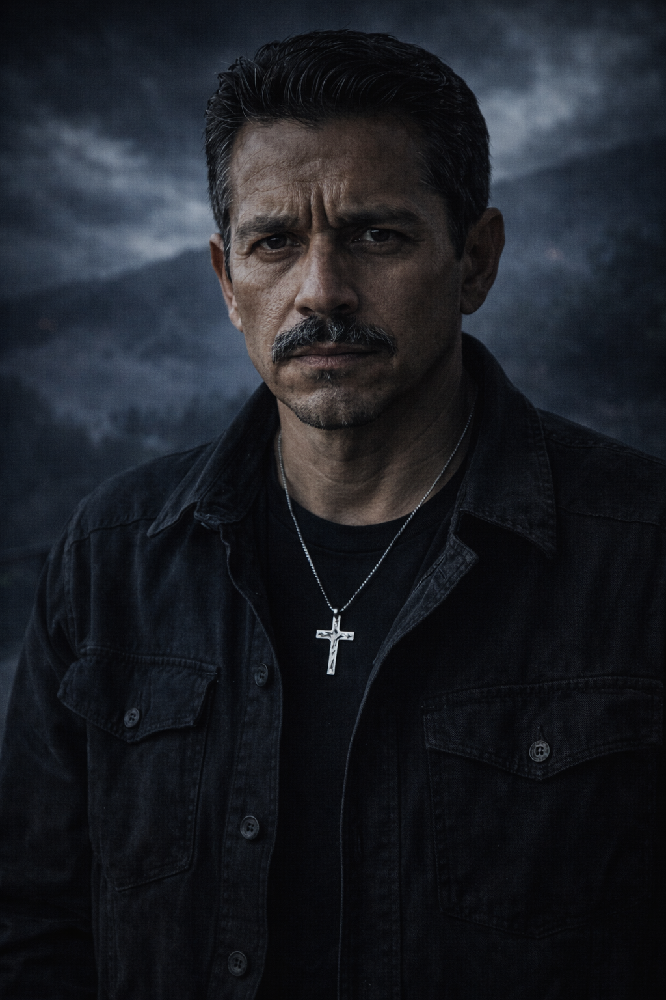
Reyes was drinking black coffee, watching the sun crest over the jagged peaks of the Sierra Madre mountains.
A heavy, terrified silence hung over the veranda. Standing ten feet away from the table was Arturo, Obsidian’s chief liaison to their New York banking operations. Arturo was sweating profusely despite the mountain chill. He held a decrypted satellite phone in his trembling hands.
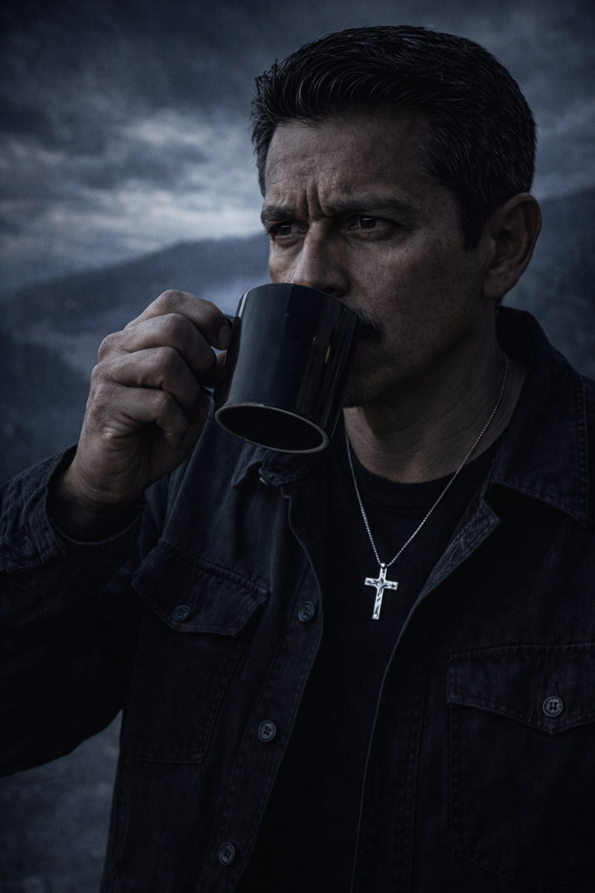
"Say it again," Reyes ordered. His voice was quiet, almost gentle. It was the voice of a man who never had to raise it to get someone killed.
Arturo swallowed hard, his eyes darting to the armed guards flanking the table.
"Patrón... the New York bank. Obsidian Capital," Arturo stammered, his voice cracking. "We lost it. Sloane Kensington orchestrated a blind trust proxy transfer on Friday night. Fifty-one percent of the voting shares. When the market opened thirty minutes ago... a holding company took over the board. They fired our executives. They are liquidating the laundering channels."
Reyes didn't blink. He took a slow sip of his coffee, his dark, impassive eyes fixed on the horizon.
"And who owns the holding company?" Reyes asked smoothly.
"We... we don't have a name, Patrón. It’s buried behind shell corporations. But the street is saying it’s the man they call The Shark."
Reyes set his coffee mug down on the wooden table. The clink of the ceramic sounded like a gunshot in the dead silence of the morning.
He had trusted Sloane Kensington. He had paid her millions to keep his money clean, to navigate the pristine, bloodless halls of Wall Street. And she had handed the keys to his empire to a ghost in a bespoke suit.
"Sloane Kensington," Reyes murmured, tasting the name, a cold, empty smile touching the corners of his mouth. "She thought because she works in a glass tower, she is untouchable. She forgot who built the tower."
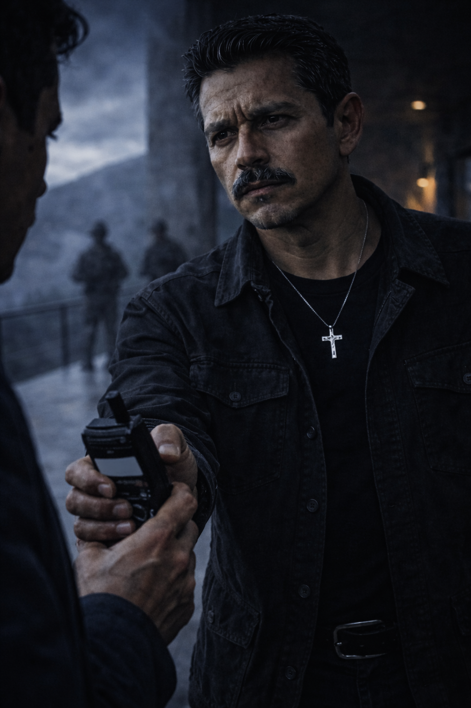
Reyes stood up from the table. The movement was slow, deliberate, radiating absolute, terrifying authority. He walked over to Arturo, taking the satellite phone from his shaking hands.
"Call the New York cell," Reyes commanded, looking out over the mountains. "Tell them to burn the 84th floor of Obsidian Capital to the ground. If there is a server left, destroy it."
Arturo nodded frantically. "And Kensington, Patrón? She is missing. Her accounts were moved to Zurich."
Reyes turned his gaze to Arturo. His eyes were completely dead—the eyes of a man who had long ago traded his soul for absolute power.
"I don't care if she is in Zurich, or Paris, or on the moon," Reyes whispered, the quiet threat carrying more weight than a scream. "Send the Fuerzas Especiales. Put a ten-million-dollar bounty on her head, and twenty million on the man who calls himself The Shark."
Reyes walked back to his coffee, his face a mask of absolute, calculated violence.
"I want her brought to me," Reyes said softly. "I want Wall Street to learn exactly what happens when you try to steal from a phantom."
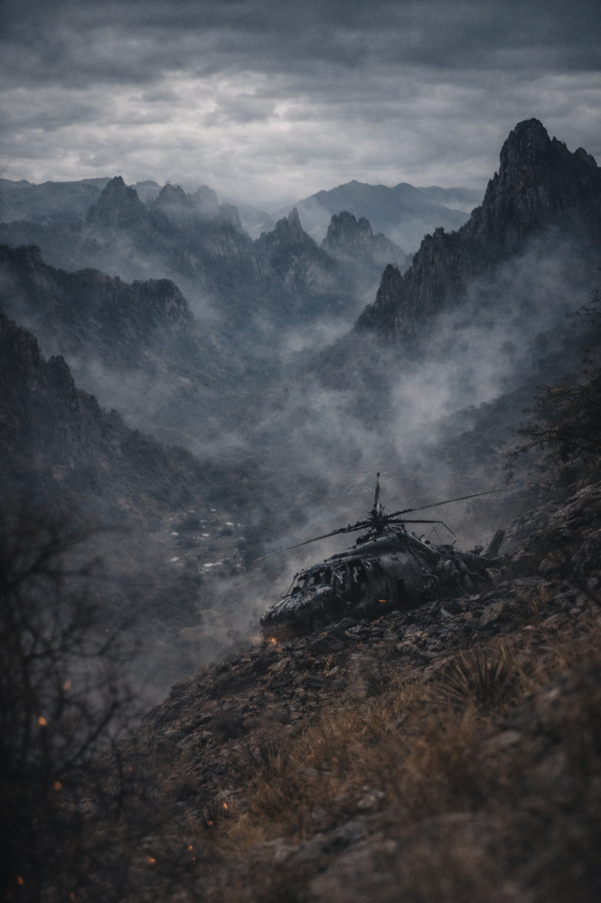
The air in the Sierra Madre mountains doesn’t just carry the cold; it carries the weight of secrets. For decades, these jagged, unforgiving peaks have swallowed armies, swallowed helicopters, and swallowed men who thought they were gods.
Nicolás Reyes never wanted to be a god. Gods require worshippers, temples, and visibility. Gods get crucified.
Reyes wanted to be a ghost.
Before he became the supreme leader of the most terrifying paramilitary cartel on the planet, before his shadow fell over the glass canyons of Wall Street, and long before the name Obsidian was whispered in the boardrooms of Manhattan, Nicolás Reyes was just a man dying of heat in a polyester uniform.

This is the arithmetic of how a ghost built an empire.
In the late 1990s, the state police in Jalisco, Mexico, did not enforce the law. They managed the peace. It was a subtle, vital distinction.
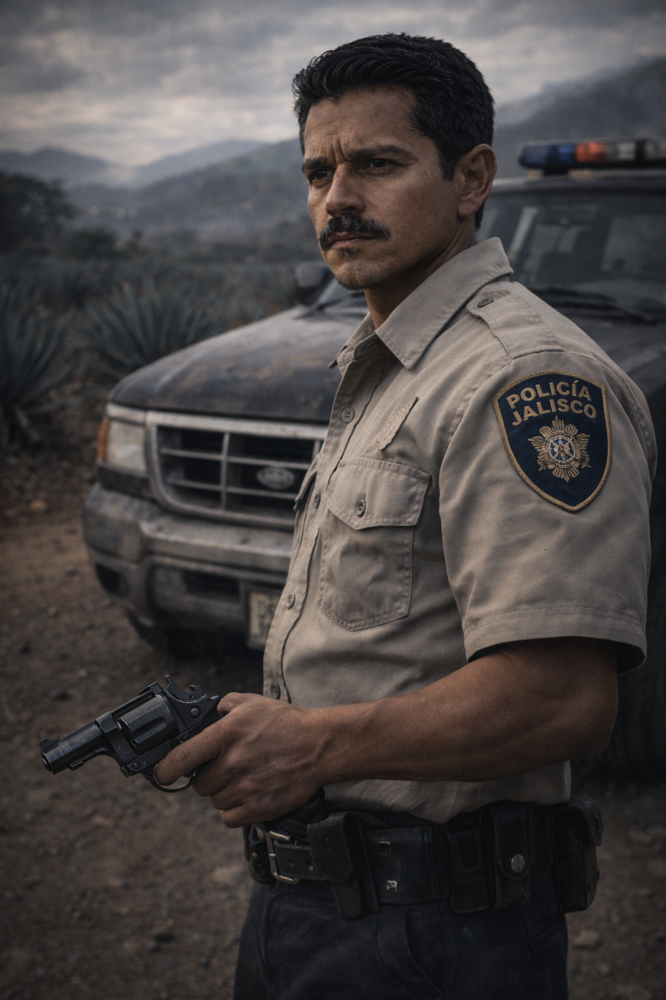
At twenty-two, Nicolás Reyes wore the badge, carried the standard-issue revolver with the worn grips, and drove a patrol truck whose suspension was shot from navigating the deeply rutted dirt roads of the agave fields. He was a quiet, intensely observant young man. He didn't drink, he didn't gamble, and he didn't speak unless spoken to.
His partners thought he was slow. In reality, he was calculating.
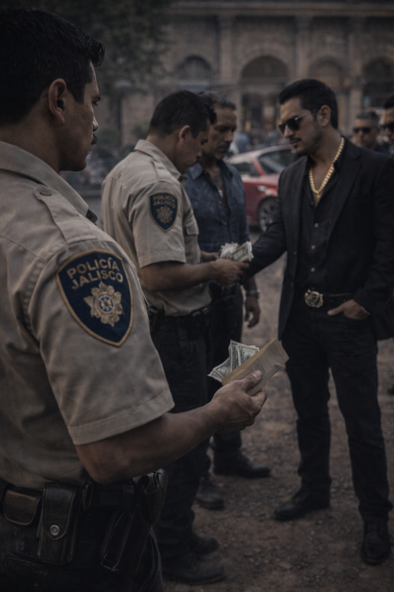
Every day, Reyes watched the theater of corruption play out. He watched his commanding officers take thick envelopes of cash from the Milenio Cartel lieutenants just to look the other way while trucks full of narcotics rolled north. He watched the cartel bosses—men with gold chains, diamond-studded belt buckles, and exotic sports cars—parade through the plazas like royalty.
Reyes didn't hate the corruption. He hated the inefficiency.
He saw that the police were weak because they were fractured, motivated only by their next bribe. But he also saw that the cartel bosses were weak because they were loud. They let their egos dictate their operations. They bought tigers for their mansions and threw lavish parties that practically invited the DEA to drop a satellite tracker on their heads.
The turning point came on a sweltering Tuesday in July.
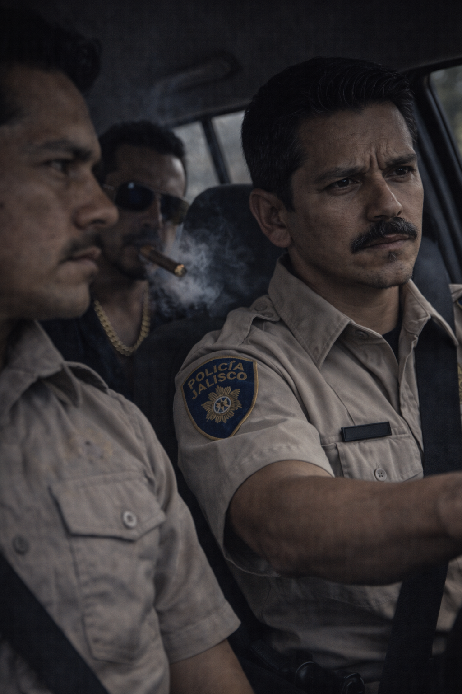
Reyes and his partner were ordered to escort a Milenio mid-level boss named Hector to a safe house. Hector was drunk, high on cocaine, and wouldn't stop bragging about the gold-plated AK-47 resting on his lap. He treated Reyes and his partner like chauffeurs, insulting them, blowing cigar smoke into the front of the cab.
Halfway up a mountain pass, a rival cartel ambushed the convoy.
They blocked the road with a burning truck and opened fire with heavy machine guns. Reyes’s partner was killed instantly, his head snapping back as a bullet shattered the windshield. Hector, the flamboyant boss, dropped his gold-plated rifle and screamed, cowering on the floorboards, weeping for his mother.
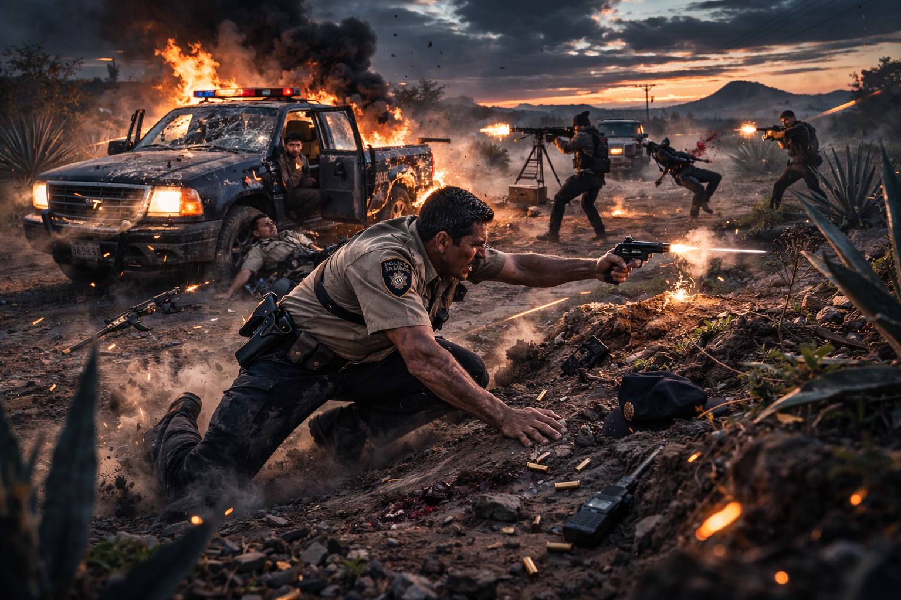
Reyes didn't panic. His heart rate barely spiked.
He unholstered his cheap, standard-issue revolver, kicked his door open, and rolled into the dust. He didn't waste ammunition spraying blindly. He moved with cold, terrifying precision, using the terrain, flanking the ambushers while they focused on the riddled truck. He put three bullets into the three men operating the machine gun, executing them with surgical headshots.
When the gunsmoke cleared, Reyes walked back to the truck. He looked down at Hector, who was still sobbing in a pool of his own urine on the floorboards.
Reyes looked at the gold-plated AK-47. It was a beautiful, useless thing.
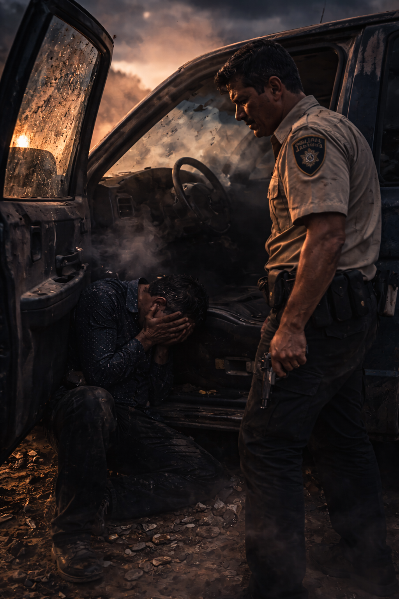
"Get up," Reyes said quietly.
Hector scrambled out, shaking, trying to offer Reyes a million dollars, a promotion, whatever he wanted.
"You are a clown," Reyes whispered, his dark eyes entirely devoid of empathy. "And clowns do not survive the winter."
Reyes shot Hector once in the chest. He left the gold-plated gun in the dirt.
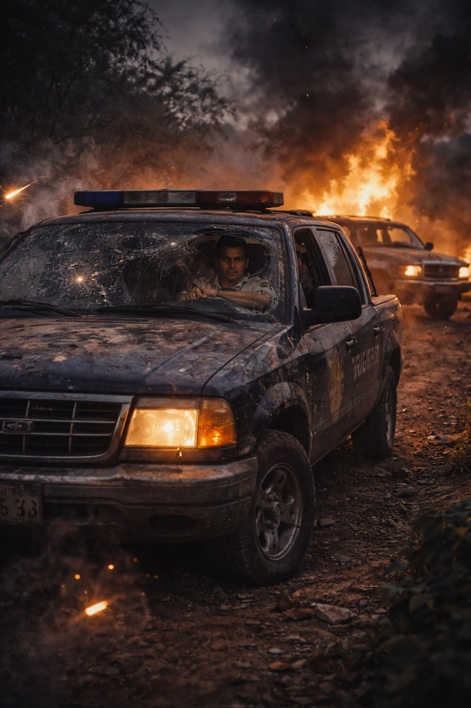
He didn't return to the precinct. He walked up into the mountains and never wore a police uniform again. The legend of El Fantasma had begun.
Over the next decade, the Mexican underworld shifted violently. The old cartels splintered, their flamboyant leaders captured by the military or gunned down in spectacular, public displays of vanity.
Reyes watched it all from the shadows. He had offered his services as a freelance enforcer to the highest bidders, building a reputation not for sadistic torture, but for absolute, infallible reliability. If Reyes was given a target, the target ceased to exist. No bombs in public squares, no theatrical hangings from bridges. Just quiet, permanent erasure.
By 2010, the remnants of his old employers were weak, bloated, and fighting a losing war against the government. Reyes decided it was time to stop working for clowns.
He staged his coup not with an army, but with a ledger and a dozen loyal men.
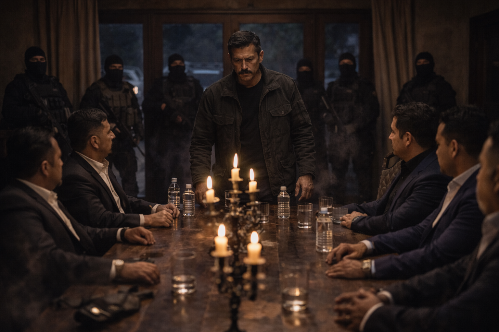
He invited the remaining bosses of the region to a "peace summit" at an isolated ranch. They arrived in armored SUVs, wearing designer suits, expecting a negotiation. Reyes didn't negotiate. When they sat down at the table, Reyes’s men sealed the doors.
Reyes stood at the head of the table. He wore tactical canvas and combat boots.
"For thirty years, you have treated this business like a reality television show," Reyes told the terrified men. "You buy mansions that the Americans seize. You buy politicians who betray you. You leave bodies in the streets because you crave fear. But fear is loud. Fear draws attention. From this moment on, we do not seek attention. We seek absolute efficiency."
He executed them all.
That night, Reyes founded the Jalisco New Generation Cartel (CJNG). But he ran it like a Fortune 500 company merged with a private military contractor.
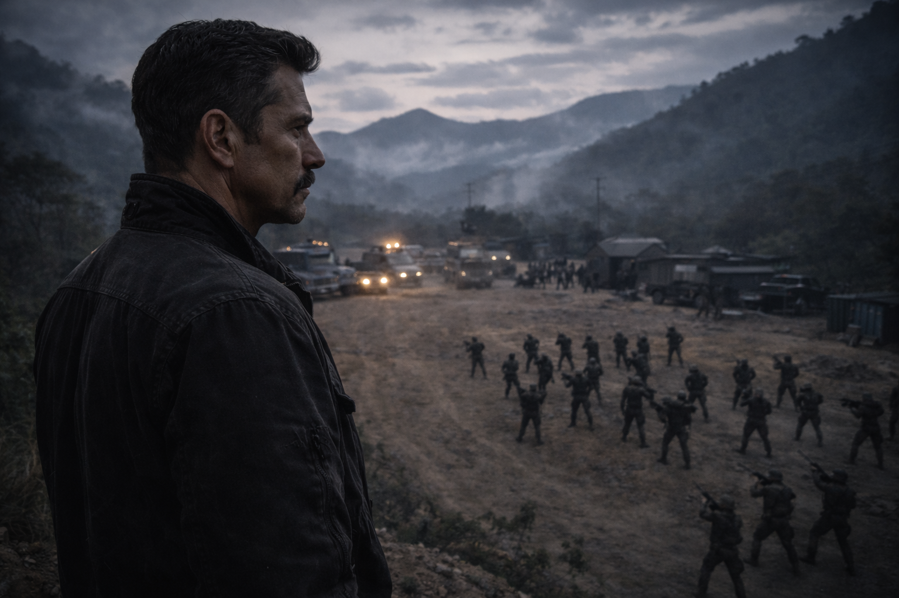
He stripped away the glamour. He forbade his men from driving flashy cars or wearing jewelry. He took the billions of dollars previously wasted on vanity and invested it entirely into militarization. He bought heavy weaponry from the black market—RPG-7s, Barrett .50 caliber sniper rifles, and drone technology. He hired former special forces soldiers from around the globe to train his foot soldiers in asymmetric warfare, squad tactics, and encrypted communications.
His men didn't wear jeans and cowboy boots; they wore level-IV ballistic plates, Kevlar helmets, and uniform tactical gear bearing the insignia of the Fuerzas Especiales.
They became an army of ghosts, commanded by the ultimate phantom. In five years, Reyes conquered half of Mexico, operating with a ruthless, decentralized corporate structure that the DEA could not penetrate.
But as his empire grew, Reyes slammed into a wall that bullets could not shatter.
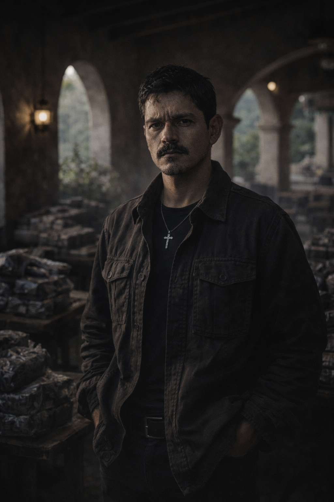
By 2015, Reyes controlled the ports, the mountains, and the supply lines. His organization was generating upward of two billion dollars a year in pure, untaxed cash.
And it was destroying him.
The logistical nightmare of physical cash is a reality that Hollywood rarely portrays. Two billion dollars in hundred-dollar bills weighs roughly twenty-two tons. You cannot put twenty-two tons of dirty money into a bank. You cannot wire it.
Reyes had literal warehouses hidden in the mountains, stacked floor to ceiling with shrink-wrapped pallets of American currency.
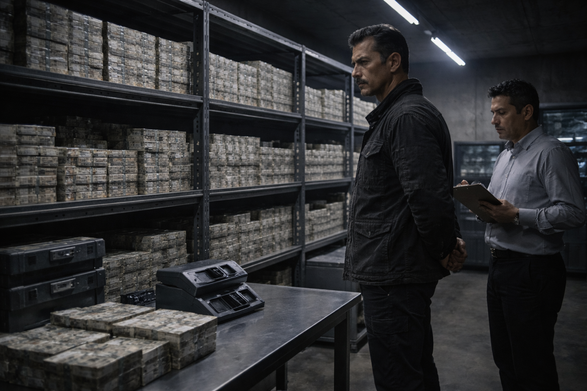
One evening, Reyes stood inside a subterranean bunker in Michoacán, staring at a wall of money that measured forty feet long and ten feet high. His chief accountant, a nervous man named Luis, stood beside him holding a clipboard.
"We lost another four million this month, Patrón," Luis reported, his voice trembling.
Reyes didn't look at him. "The federales?"
"No, Patrón," Luis swallowed hard. "Rats. Dampness. The mold ate through the plastic on the lower pallets. The mice nested in the rest. It's ruined."
Reyes walked forward, pulling a hunting knife from his belt. He sliced open one of the lower bundles. Instead of crisp hundreds, a rotting, mildewed slurry of green paper spilled out onto the concrete floor.
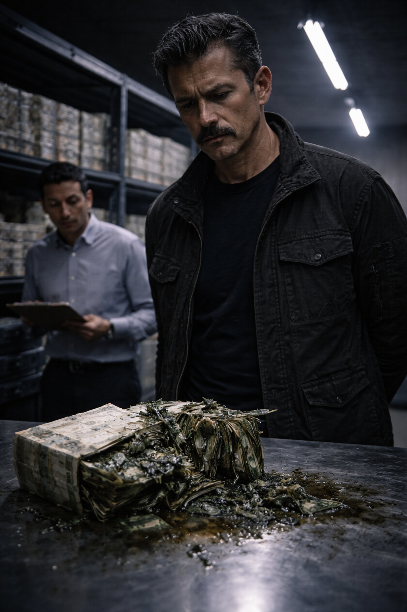
Reyes stared at the decaying money.
In that damp, subterranean room, El Fantasma had a profound realization. Violence had a ceiling.
He had built the most powerful paramilitary force in the hemisphere. He could wage war against the government and win. But he was fighting a 20th-century war in a 21st-century world. He was a warlord, but to truly conquer the world, to truly become untouchable, he needed to be a global market maker.
He couldn't rely on street-level money launderers buying strip malls and car washes. That was too slow. It was peasant work.
To wash billions, he needed a washing machine the size of a skyscraper. He didn't need a corrupt bank teller; he needed an entire investment bank. He needed a bridge directly into the heart of the global financial system, where trillions of dollars changed hands every microsecond, where his blood money could disappear into the digital ether of algorithmic trading, hedge funds, and corporate bonds.
He needed Wall Street.
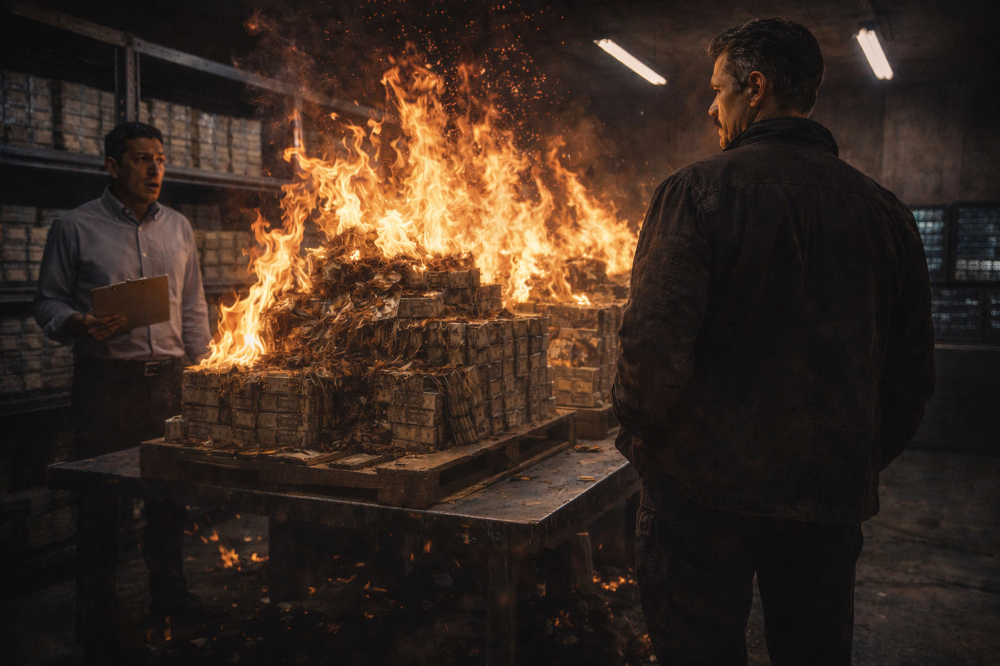
"Burn it," Reyes commanded, gesturing to the rotting pallets of cash.
"Burn the money?" Luis gasped.
"All of it," Reyes said, turning his back on the fortune. "Paper is a liability. We are going digital."
Reyes did not invade Wall Street with guns. He invaded it with leverage.
He tasked his intelligence wing to find the perfect host. They scoured the financial districts of New York, London, and Geneva, looking for a specific type of vulnerability. They found it in Obsidian Capital.
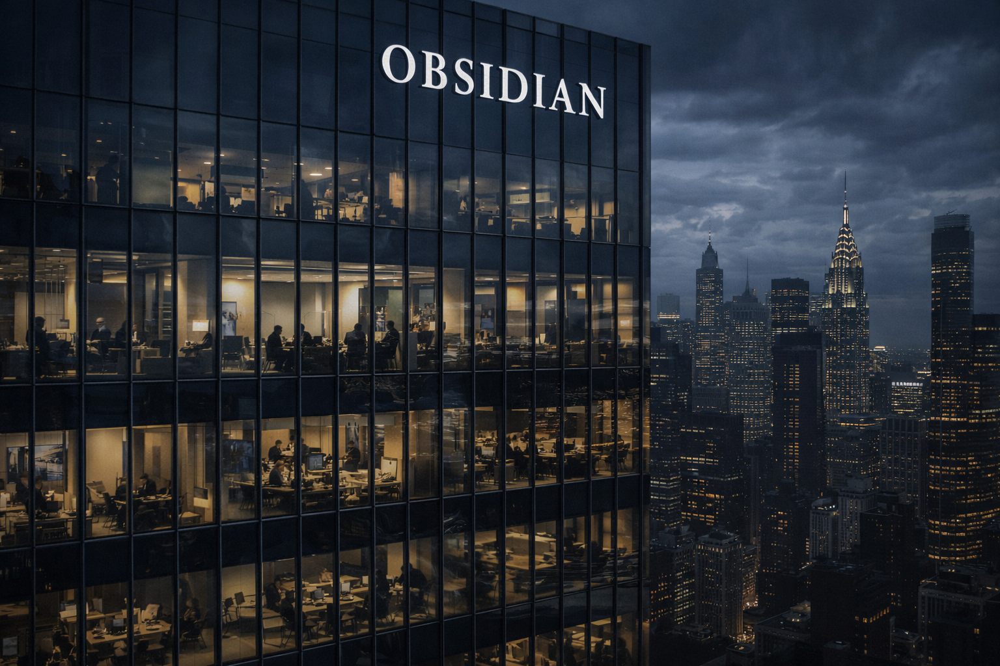
Obsidian was a prestigious, mid-sized investment bank headquartered in a glass tower in Midtown Manhattan. They catered to old money, managing wealth for European aristocrats, Silicon Valley tech lords, and sovereign wealth funds. But behind the polished marble floors and the Brioni suits, Obsidian was bleeding. A series of disastrous, highly leveraged bets on commercial real estate had left the bank secretly insolvent. They were weeks away from a catastrophic bankruptcy that would wipe out the fortunes of their elite clientele and send the board of directors to federal prison for financial negligence.
They were desperate. They were drowning.
Reyes threw them an anvil.
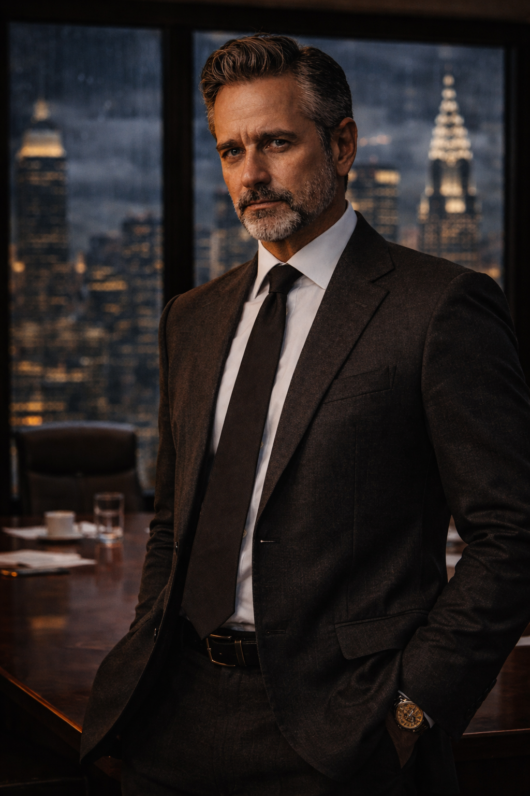
He did not fly to New York. The Phantom never left his mountains. Instead, he sent a single emissary—a brilliant, impeccably dressed financial architect named Ezra Roth (the man who would later become known as the Rabbi of Wall Street).
On a rainy Thursday night, Ezra walked into the 84th-floor boardroom of Obsidian Capital. The board of directors, including the aging Chairman, sat around the mahogany table, looking exhausted and defeated. They thought Ezra was representing a Saudi sovereign wealth fund coming to bail them out.
Ezra opened a sleek, black leather briefcase. He didn't pull out a term sheet. He pulled out a series of high-resolution photographs and tossed them onto the polished wood.
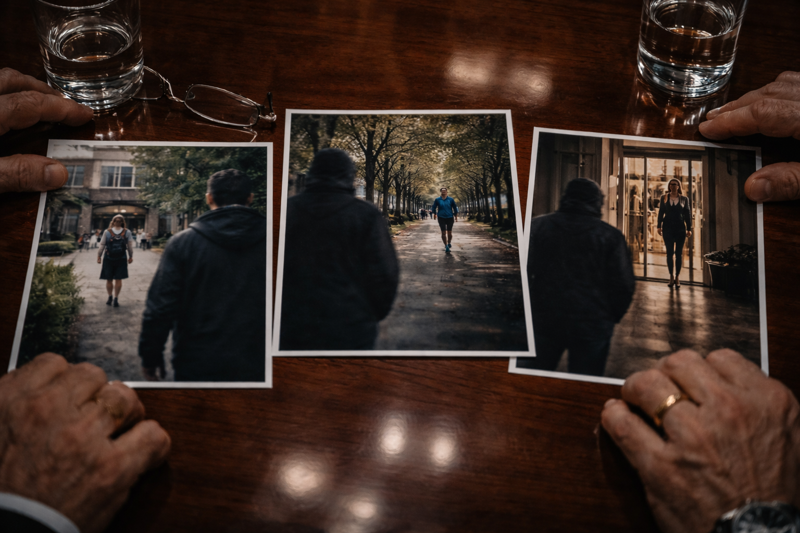
The Chairman picked them up. The color drained from his face instantly.
The photos were of the board members' families. The Chairman’s daughter at her private school in Connecticut. The CFO’s husband jogging in Central Park. The CEO’s mistress leaving her apartment in Tribeca. In the background of every single photo was a man wearing a dark jacket, his face obscured, watching them.
"What is this?" the Chairman choked out, his hands shaking. "Who are you?"
Ezra smiled politely, taking a seat at the table.
"I represent a private syndicate of... aggressive venture capitalists," Ezra said smoothly. "My employers are aware of your liquidity crisis. They are aware that the SEC is preparing to audit your books next Tuesday. When they do, this bank will collapse, and every man in this room will face twenty years in a federal penitentiary."
The boardroom was dead silent. The sound of the rain lashing against the floor-to-ceiling windows was deafening.
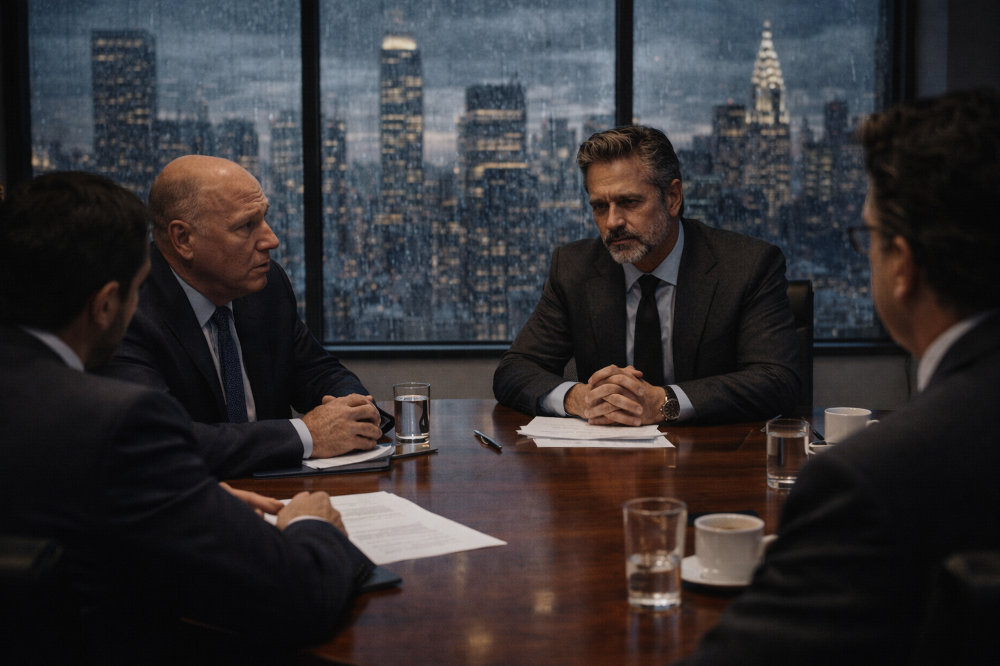
"My employers are offering you a lifeline," Ezra continued, folding his hands on the table. "By tomorrow morning, three billion dollars in untraceable, decentralized cryptocurrency will be staked in offshore accounts controlled by Obsidian. It will perfectly plug the hole in your balance sheets. You will pass the audit. Your clients will never know you almost lost their fortunes. You will remain rich, respected men of high society."
The CFO, a sweaty, panicking man, leaned forward. "And what do your employers want in return?"
"Control," Ezra said simply. "You will retain your titles. You will continue to attend your galas and play golf in the Hamptons. But this bank will now serve as the primary liquidity pool for my clients. We will route our assets through your corporate bonds, your shell companies, and your algorithmic trading desks. You will wash the money. And if you ever try to stop, or if you ever breathe a word of this to the authorities..."
Ezra tapped the stack of photographs.
"...my employers will not sue you. They will simply erase you."
The board members looked at each other. It wasn't a choice. It was a hostage situation disguised as a corporate merger. To save their egos, their freedom, and their families, they sold their souls.
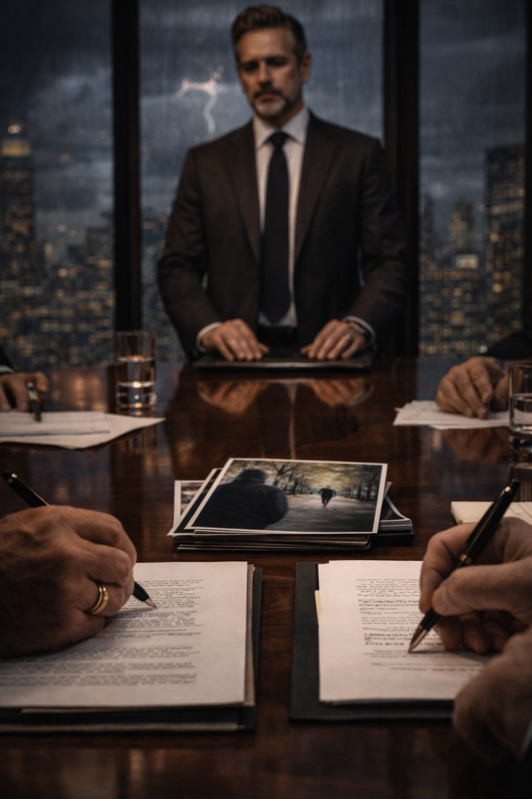
They signed the papers.
Overnight, Obsidian Capital ceased to be a legitimate bank. It became the ultimate "Dark Pool"—the financial engine of the CJNG. Reyes’s mountain of dirty cash was slowly, methodically fed into the global banking system, emerging on the other side as clean, legitimate equity.
Reyes knew that ruling through fear had its limits. The old men on the board of Obsidian were weak. They were terrified. Terrified men make mistakes.
He needed someone inside the bank who wasn't driven by fear, but by pure, cold ambition. He needed an apex predator to manage the daily operations of his new washing machine. He needed someone who could speak the language of Wall Street flawlessly while managing the deadly demands of a global cartel.
He found Sloane Kensington.
At the time, Sloane was a rising star at a rival firm, a brilliant strategist known for her absolute ruthlessness in hostile takeovers. She was passed over for a C-suite promotion because the old boys' club deemed her "too aggressive."
Reyes’s recruiters approached her. They didn't lie to her. They told her exactly who they were, and exactly what they needed. They offered her the position of Chief Operating Officer at Obsidian Capital. They offered her a salary that rivaled the GDP of small island nations.
Sloane didn't flinch at the blood on the money. She saw the sheer, terrifying power of the machine Reyes had built. She accepted.
For two years, Sloane Kensington was Reyes’s masterpiece. She optimized the laundering channels, she ruthlessly managed the terrified board of directors, and she kept the SEC entirely in the dark. Obsidian Capital thrived under her iron grip, becoming a fortress of criminal finance.
Reyes trusted her. It was the one and only time the Phantom ever made the mistake of trusting a suit.
For years, the machine ran flawlessly.
Nicolás Reyes remained in the shadows of the Sierra Madre, a ghost directing a global empire from an encrypted satellite terminal. His Fuerzas Especiales controlled the ground, and Obsidian Capital controlled the sky. The blood of the cartel flowed through the veins of Wall Street, completely undetected.
He had achieved the impossible. He had shattered the ceiling.
Until that Friday night.
Until Sloane Kensington, the woman he had hand-picked to guard his fortress, walked into the 84th-floor boardroom, sat down next to a man called The Shark, and quietly, legally, stole his empire.
Reyes had built Obsidian Capital to be a weapon against the world. He never imagined that the weapon would be turned on him.
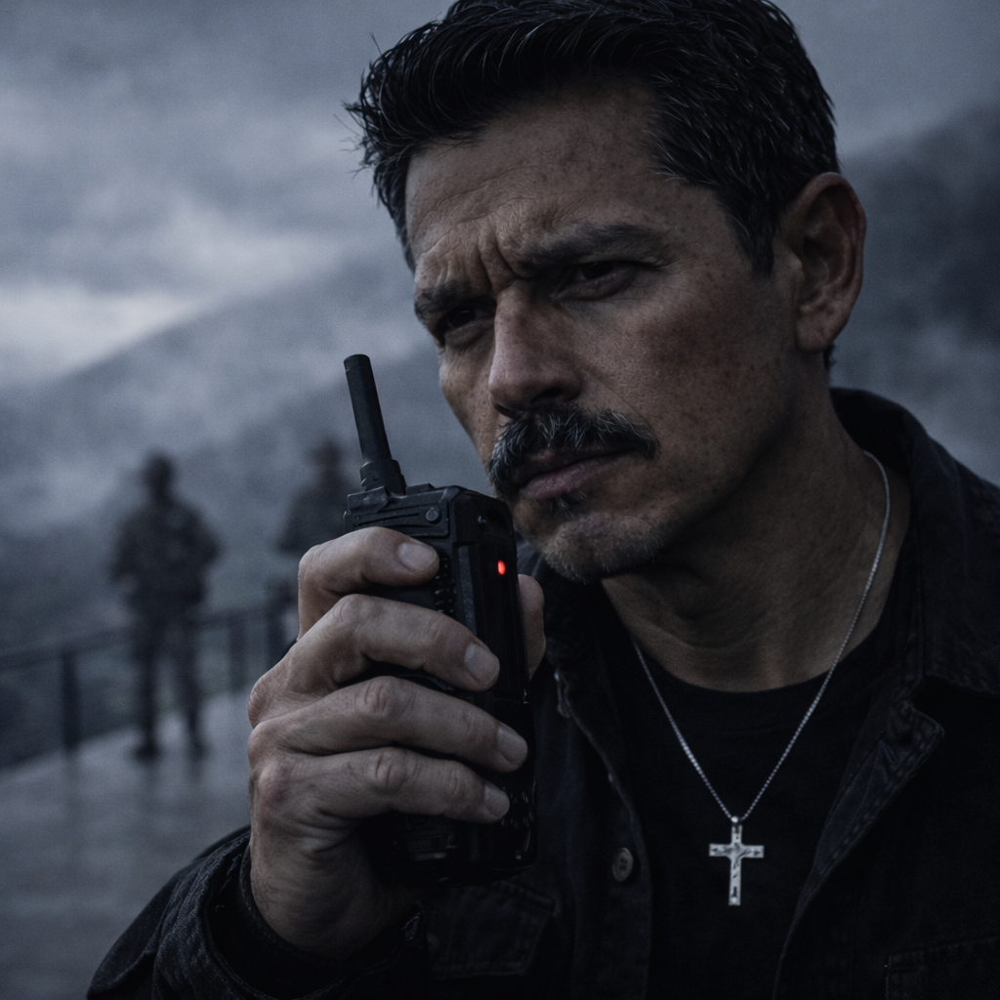
Sitting on the veranda of his mountain stronghold, watching the sun rise over the jagged peaks, Reyes felt a cold, familiar calm settle over him. He was a ghost, but he was a ghost born in the dust and blood of Jalisco. Wall Street had forgotten the arithmetic of violence. They thought signatures on a piece of paper could erase a phantom.
They were wrong.
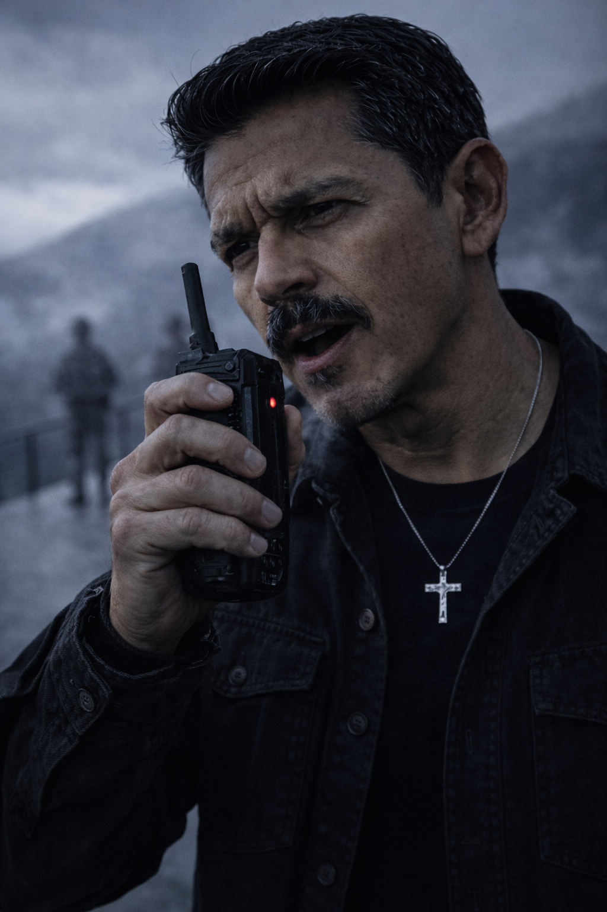
Reyes picked up his encrypted radio, the heavy plastic cold in his hand. He keyed the mic, broadcasting to his commanders scattered across the hemisphere.
"This is Actual," Reyes whispered, his voice as dark and unforgiving as the mountains themselves. "Obsidian has fallen. Protocol Black is active. Send the hunters to New York. Burn the towers, kill the bankers, and bring me the woman."
The corporate espionage was over. The war had begun.